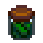
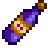
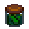
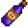

𝑻𝒉𝒆 𝑪𝒉𝒂𝒓𝒂𝒄𝒕𝒆𝒓𝒔 𝒐𝒇 𝑺𝒕𝒂𝒓𝒅𝒆𝒘 𝑽𝒂𝒍𝒍𝒆𝒚
𝙾𝚗 𝚝𝚑𝚒𝚜 𝚠𝚎𝚋𝚙𝚊𝚐𝚎, 𝚢𝚘𝚞 𝚠𝚒𝚕𝚕 𝚏𝚒𝚗𝚍 𝚌𝚘𝚗𝚝𝚎𝚗𝚝 𝚊𝚕𝚕 𝚊𝚋𝚘𝚞𝚝 𝚜𝚘𝚖𝚎 𝚘𝚏 𝚖𝚢 𝚏𝚊𝚟𝚘𝚛𝚒𝚝𝚎 𝚌𝚑𝚊𝚛𝚊𝚌𝚝𝚎𝚛𝚜 𝚒𝚗 𝚝𝚑𝚎 𝚐𝚊𝚖𝚎, 𝚛𝚊𝚗𝚐𝚒𝚗𝚐 𝚏𝚛𝚘𝚖 𝚊 𝚍𝚎𝚜𝚌𝚛𝚒𝚙𝚝𝚒𝚘𝚗 𝚘𝚏 𝚝𝚑𝚎 𝚌𝚑𝚊𝚛𝚊𝚌𝚝𝚎𝚛 𝚝𝚘 𝚝𝚑𝚎𝚒𝚛 𝚏𝚊𝚟𝚘𝚛𝚒𝚝𝚎 𝚐𝚒𝚏𝚝𝚜 𝚝𝚘 𝚝𝚑𝚎𝚒𝚛 𝚜𝚙𝚎𝚌𝚒𝚊𝚕 𝚑𝚎𝚊𝚛𝚝 𝚎𝚟𝚎𝚗𝚝𝚜.
Harvey
𝙷𝚊𝚛𝚟𝚎𝚢 𝚒𝚜 𝚘𝚗𝚎 𝚘𝚏 𝚝𝚑𝚎 𝚌𝚑𝚊𝚛𝚊𝚌𝚝𝚎𝚛𝚜 𝚊𝚟𝚊𝚒𝚕𝚊𝚋𝚕𝚎 𝚝𝚘 𝚖𝚊𝚛𝚛𝚢 𝚒𝚗 𝚝𝚑𝚎 𝚐𝚊𝚖𝚎. 𝙷𝚎 𝚒𝚜 𝚒𝚗𝚝𝚛𝚘𝚟𝚎𝚛𝚝𝚎𝚍, 𝚊𝚠𝚔𝚠𝚊𝚛𝚍 𝚊𝚗𝚍 𝚌𝚘𝚖𝚙𝚊𝚜𝚜𝚒𝚘𝚗𝚊𝚝𝚎. 𝙷𝚎 𝚒𝚜 𝚝𝚑𝚎 𝚕𝚘𝚌𝚊𝚕 𝚍𝚘𝚌𝚝𝚘𝚛 𝚒𝚗 𝚝𝚑𝚎 𝚝𝚘𝚠𝚗, 𝚊𝚗𝚍 𝚑𝚎 𝚛𝚞𝚗𝚜 𝚝𝚑𝚎 𝚜𝚖𝚊𝚕𝚕 𝚌𝚕𝚒𝚗𝚒𝚌 𝚗𝚎𝚡𝚝 𝚝𝚘 𝙿𝚒𝚎𝚛𝚛𝚎'𝚜 𝚐𝚎𝚗𝚎𝚛𝚊𝚕 𝚜𝚝𝚘𝚛𝚎.
𝚄𝚜𝚎 𝚝𝚑𝚒𝚜 𝚜𝚕𝚒𝚍𝚎𝚛 𝚝𝚘 𝚒𝚗𝚍𝚒𝚌𝚊𝚝𝚎 𝚑𝚘𝚠 𝚖𝚞𝚌𝚑 𝚢𝚘𝚞 𝚕𝚒𝚔𝚎 𝙷𝚊𝚛𝚟𝚎𝚢.
Loved Gifts
 



𝚃𝚑𝚛𝚎𝚎 𝚘𝚏 𝙷𝚊𝚛𝚟𝚎𝚢'𝚜 𝚏𝚊𝚟𝚘𝚛𝚒𝚝𝚎 𝚝𝚑𝚒𝚗𝚐𝚜 𝚝𝚘 𝚋𝚎 𝚐𝚒𝚟𝚎𝚗 𝚊𝚛𝚎 𝙿𝚒𝚌𝚔𝚕𝚎𝚜, 𝙲𝚘𝚏𝚏𝚎𝚎 𝚊𝚗𝚍 𝚆𝚒𝚗𝚎. 𝙷𝚎 𝚊𝚕𝚜𝚘 𝚕𝚘𝚟𝚎𝚜 𝚂𝚞𝚙𝚎𝚛 𝙼𝚎𝚊𝚕, 𝙿𝚛𝚒𝚜𝚖𝚊𝚝𝚒𝚌 𝚂𝚑𝚊𝚛𝚍 𝚊𝚗𝚍 𝚃𝚛𝚞𝚏𝚏𝚕𝚎 𝙾𝚒𝚕.
Heart Event

𝙸𝚗 𝚝𝚑𝚎 𝚏𝚘𝚞𝚛𝚝𝚎𝚎𝚗 𝚑𝚎𝚊𝚛𝚝 𝚎𝚟𝚎𝚗𝚝, 𝚜𝚎𝚎𝚗 𝚘𝚗 𝚝𝚑𝚎 𝚕𝚎𝚏𝚝, 𝙷𝚊𝚛𝚟𝚎𝚢 𝚌𝚘𝚘𝚔𝚜 𝚝𝚑𝚎 𝚙𝚕𝚊𝚢𝚎𝚛 𝚙𝚊𝚜𝚝𝚊 𝚊𝚗𝚍 𝚝𝚑𝚎 𝚝𝚠𝚘 𝚎𝚊𝚝 𝚝𝚘𝚐𝚎𝚝𝚑𝚎𝚛 𝚒𝚗 𝚝𝚑𝚎𝚒𝚛 𝚜𝚑𝚊𝚛𝚎𝚍 𝚑𝚘𝚞𝚜𝚎. 𝙸𝚗 𝚘𝚛𝚍𝚎𝚛 𝚏𝚘𝚛 𝚝𝚑𝚒𝚜 𝚎𝚟𝚎𝚗𝚝 𝚝𝚘 𝚋𝚎 𝚝𝚛𝚒𝚐𝚐𝚎𝚛𝚎𝚍, 𝚝𝚑𝚎 𝚙𝚕𝚊𝚢𝚎𝚛 𝚖𝚞𝚜𝚝 𝚑𝚊𝚟𝚎 𝚞𝚙𝚐𝚛𝚊𝚍𝚎𝚍 𝚝𝚑𝚎 𝚏𝚊𝚛𝚖𝚑𝚘𝚞𝚜𝚎 𝚝𝚠𝚒𝚌𝚎 𝚊𝚗𝚍 𝚊𝚕𝚜𝚘 𝚝𝚑𝚎 𝚙𝚕𝚊𝚢𝚎𝚛 𝚖𝚞𝚜𝚝 𝚋𝚎 𝚖𝚊𝚛𝚛𝚒𝚎𝚍 𝚝𝚘 𝙷𝚊𝚛𝚟𝚎𝚢.
𝙸𝚗 𝚝𝚑𝚎 𝚝𝚎𝚗 𝚑𝚎𝚊𝚛𝚝 𝚎𝚟𝚎𝚗𝚝, 𝚜𝚎𝚎𝚗 𝚘𝚗 𝚝𝚑𝚎 𝚛𝚒𝚐𝚑𝚝, 𝙷𝚊𝚛𝚟𝚎𝚢 𝚝𝚊𝚔𝚎𝚜 𝚝𝚑𝚎 𝚙𝚕𝚊𝚢𝚎𝚛 𝚘𝚗 𝚊 𝚑𝚘𝚝-𝚊𝚒𝚛 𝚋𝚊𝚕𝚕𝚘𝚘𝚗 𝚛𝚒𝚍𝚎 𝚘𝚟𝚎𝚛 𝚝𝚑𝚎 𝚟𝚊𝚕𝚕𝚎𝚢.
Penny

𝙿𝚎𝚗𝚗𝚢 𝚒𝚜 𝚘𝚗𝚎 𝚘𝚏 𝚝𝚑𝚎 𝚌𝚑𝚊𝚛𝚊𝚌𝚝𝚎𝚛𝚜 𝚊𝚟𝚊𝚒𝚕𝚊𝚋𝚕𝚎 𝚝𝚘 𝚖𝚊𝚛𝚛𝚢 𝚒𝚗 𝚝𝚑𝚎 𝚐𝚊𝚖𝚎. 𝚂𝚑𝚎 𝚒𝚜 𝚒𝚗𝚝𝚛𝚘𝚟𝚎𝚛𝚝𝚎𝚍, 𝚊𝚗𝚡𝚒𝚘𝚞𝚜 𝚊𝚗𝚍 𝚌𝚕𝚎𝚟𝚎𝚛. 𝚂𝚑𝚎 𝚜𝚎𝚛𝚟𝚎𝚜 𝚊𝚜 𝚝𝚑𝚎 𝚕𝚘𝚌𝚊𝚕 𝚝𝚎𝚊𝚌𝚑𝚎𝚛, 𝚊𝚗𝚍 𝚝𝚞𝚝𝚘𝚛𝚜 𝚅𝚒𝚗𝚌𝚎𝚗𝚝 𝚊𝚗𝚍 𝙹𝚊𝚜 𝚒𝚗 𝚝𝚑𝚎 𝚝𝚘𝚠𝚗 𝚕𝚒𝚋𝚛𝚊𝚛𝚢.
𝚄𝚜𝚎 𝚝𝚑𝚒𝚜 𝚜𝚕𝚒𝚍𝚎𝚛 𝚝𝚘 𝚒𝚗𝚍𝚒𝚌𝚊𝚝𝚎 𝚑𝚘𝚠 𝚖𝚞𝚌𝚑 𝚢𝚘𝚞 𝚕𝚒𝚔𝚎 𝙿𝚎𝚗𝚗𝚢.
Loved Gifts


𝚃𝚑𝚛𝚎𝚎 𝚘𝚏 𝙿𝚎𝚗𝚗𝚢'𝚜 𝚏𝚊𝚟𝚘𝚛𝚒𝚝𝚎 𝚝𝚑𝚒𝚗𝚐𝚜 𝚝𝚘 𝚋𝚎 𝚐𝚒𝚟𝚎𝚗 𝚊𝚛𝚎 𝚁𝚘𝚘𝚝𝚜 𝙿𝚕𝚊𝚝𝚝𝚎𝚛, 𝙿𝚘𝚙𝚙𝚢𝚜𝚎𝚎𝚍 𝙼𝚞𝚏𝚏𝚒𝚗 𝚊𝚗𝚍 𝚃𝚘𝚖 𝙺𝚑𝚊 𝚂𝚘𝚞𝚙. 𝚂𝚑𝚎 𝚊𝚕𝚜𝚘 𝚕𝚘𝚟𝚎𝚜 𝙴𝚖𝚎𝚛𝚊𝚕𝚍, 𝙼𝚎𝚕𝚘𝚗 𝚊𝚗𝚍 𝙿𝚘𝚙𝚙𝚢.
Heart Event

𝙸𝚗 𝚝𝚑𝚎 𝚏𝚘𝚞𝚛𝚝𝚎𝚎𝚗 𝚑𝚎𝚊𝚛𝚝 𝚎𝚟𝚎𝚗𝚝, 𝚜𝚎𝚎𝚗 𝚘𝚗 𝚝𝚑𝚎 𝚕𝚎𝚏𝚝, 𝙿𝚎𝚗𝚗𝚢 𝚊𝚜𝚔𝚜 𝚝𝚑𝚎 𝚙𝚕𝚊𝚢𝚎𝚛 𝚒𝚏 𝚝𝚑𝚎𝚢 𝚠𝚘𝚞𝚕𝚍 𝚋𝚎 𝚘𝚙𝚙𝚘𝚜𝚎𝚍 𝚝𝚘 𝚑𝚎𝚛 𝚍𝚎𝚌𝚘𝚛𝚊𝚝𝚒𝚗𝚐 𝚝𝚑𝚎 𝚑𝚘𝚞𝚜𝚎. 𝚃𝚑𝚎 𝚙𝚕𝚊𝚢𝚎𝚛 𝚝𝚑𝚎𝚗 𝚌𝚊𝚗 𝚌𝚑𝚘𝚘𝚜𝚎 𝚋𝚎𝚝𝚠𝚎𝚎𝚗 𝚟𝚊𝚛𝚒𝚘𝚞𝚜 𝚜𝚝𝚢𝚕𝚎𝚜, 𝚘𝚛 𝚍𝚎𝚌𝚕𝚒𝚗𝚎 𝚊 𝚛𝚎𝚗𝚘𝚟𝚊𝚝𝚒𝚘𝚗 𝚊𝚕𝚝𝚘𝚐𝚎𝚝𝚑𝚎𝚛.
𝙸𝚗 𝚝𝚑𝚎 𝚎𝚒𝚐𝚑𝚝 𝚑𝚎𝚊𝚛𝚝 𝚎𝚟𝚎𝚗𝚝, 𝚜𝚎𝚎𝚗 𝚘𝚗 𝚝𝚑𝚎 𝚛𝚒𝚐𝚑𝚝, 𝙿𝚎𝚗𝚗𝚢 𝚒𝚗𝚟𝚒𝚝𝚎𝚜 𝚝𝚑𝚎 𝚙𝚕𝚊𝚢𝚎𝚛 𝚝𝚘 𝚝𝚊𝚕𝚔 𝚊𝚋𝚘𝚞𝚝 𝚏𝚊𝚛𝚖𝚒𝚗𝚐 𝚊𝚗𝚍 𝚊𝚐𝚛𝚒𝚌𝚞𝚕𝚝𝚞𝚛𝚎 𝚒𝚗 𝚑𝚎𝚛 𝚍𝚊𝚒𝚕𝚢 𝚌𝚕𝚊𝚜𝚜 𝚠𝚒𝚝𝚑 𝚅𝚒𝚗𝚌𝚎𝚗𝚝 𝚊𝚗𝚍 𝙹𝚊𝚜.
Maru

𝙼𝚊𝚛𝚞 𝚒𝚜 𝚘𝚗𝚎 𝚘𝚏 𝚝𝚑𝚎 𝚌𝚑𝚊𝚛𝚊𝚌𝚝𝚎𝚛𝚜 𝚊𝚟𝚊𝚒𝚕𝚊𝚋𝚕𝚎 𝚝𝚘 𝚖𝚊𝚛𝚛𝚢 𝚒𝚗 𝚝𝚑𝚎 𝚐𝚊𝚖𝚎. 𝚂𝚑𝚎 𝚒𝚜 𝚒𝚗𝚝𝚎𝚕𝚕𝚒𝚐𝚎𝚗𝚝, 𝚔𝚒𝚗𝚍 𝚊𝚗𝚍 𝚒𝚗𝚗𝚘𝚟𝚊𝚝𝚒𝚟𝚎. 𝚂𝚑𝚎 𝚕𝚒𝚟𝚎𝚜 𝚊𝚗𝚍 𝚠𝚘𝚛𝚔𝚜 𝚘𝚗 𝚑𝚎𝚛 𝚛𝚘𝚋𝚘𝚝𝚒𝚌 𝚊𝚗𝚍 𝚜𝚌𝚒𝚎𝚗𝚝𝚒𝚏𝚒𝚌 𝚎𝚗𝚍𝚎𝚊𝚟𝚘𝚛𝚜 𝚒𝚗 𝚝𝚑𝚎 𝙼𝚘𝚞𝚗𝚝𝚊𝚒𝚗𝚜, 𝚊𝚗𝚍 𝚜𝚑𝚎 𝚊𝚕𝚜𝚘 𝚠𝚘𝚛𝚔𝚜 𝚒𝚗 𝚝𝚑𝚎 𝚌𝚕𝚒𝚗𝚒𝚌 𝚊𝚜 𝚊 𝚗𝚞𝚛𝚜𝚎.
𝚄𝚜𝚎 𝚝𝚑𝚒𝚜 𝚜𝚕𝚒𝚍𝚎𝚛 𝚝𝚘 𝚒𝚗𝚍𝚒𝚌𝚊𝚝𝚎 𝚑𝚘𝚠 𝚖𝚞𝚌𝚑 𝚢𝚘𝚞 𝚕𝚒𝚔𝚎 𝙼𝚊𝚛𝚞.
Loved Gifts


𝚃𝚑𝚛𝚎𝚎 𝚘𝚏 𝙼𝚊𝚛𝚞'𝚜 𝚏𝚊𝚟𝚘𝚛𝚒𝚝𝚎 𝚐𝚒𝚏𝚝𝚜 𝚝𝚘 𝚛𝚎𝚌𝚒𝚎𝚟𝚎 𝚊𝚛𝚎 𝙶𝚘𝚕𝚍 𝙱𝚊𝚛, 𝚂𝚝𝚛𝚊𝚠𝚋𝚎𝚛𝚛𝚢 𝚊𝚗𝚍 𝙱𝚊𝚝𝚝𝚎𝚛𝚢 𝙿𝚊𝚌𝚔. 𝚂𝚑𝚎 𝚊𝚕𝚜𝚘 𝚕𝚘𝚟𝚎𝚜 𝚁𝚑𝚞𝚋𝚊𝚛𝚋 𝙿𝚒𝚎, 𝙸𝚛𝚒𝚍𝚒𝚞𝚖 𝙱𝚊𝚛 𝚊𝚗𝚍 𝙲𝚊𝚞𝚕𝚒𝚏𝚕𝚘𝚠𝚎𝚛.
Heart Event

𝙸𝚗 𝚝𝚑𝚎 𝚏𝚘𝚞𝚛𝚝𝚎𝚎𝚗 𝚑𝚎𝚊𝚛𝚝 𝚎𝚟𝚎𝚗𝚝, 𝚜𝚎𝚎𝚗 𝚘𝚗 𝚝𝚑𝚎 𝚕𝚎𝚏𝚝, 𝙼𝚊𝚛𝚞 𝚝𝚎𝚕𝚕𝚜 𝚝𝚑𝚎 𝚙𝚕𝚊𝚢𝚎𝚛 𝚝𝚑𝚊𝚝 𝚝𝚑𝚎𝚛𝚎 𝚠𝚒𝚕𝚕 𝚋𝚎 𝚊 𝚛𝚊𝚛𝚎 𝚊𝚜𝚝𝚛𝚘𝚕𝚘𝚐𝚒𝚌𝚊𝚕 𝚎𝚟𝚎𝚗𝚝 𝚝𝚑𝚎 𝚗𝚎𝚡𝚝 𝚗𝚒𝚐𝚑𝚝. 𝚃𝚑𝚎 𝚗𝚎𝚡𝚝 𝚒𝚗-𝚐𝚊𝚖𝚎 𝚗𝚒𝚐𝚑𝚝, 𝙼𝚊𝚛𝚞 𝚝𝚊𝚔𝚎𝚜 𝚝𝚑𝚎 𝚙𝚕𝚊𝚢𝚎𝚛 𝚝𝚘 𝚜𝚎𝚎 𝚝𝚑𝚎 𝚎𝚟𝚎𝚗𝚝, 𝚊𝚗𝚍 𝚜𝚑𝚎 𝚝𝚎𝚕𝚕𝚜 𝚝𝚑𝚎𝚖 𝚝𝚘 𝚠𝚒𝚜𝚑 𝚞𝚗𝚍𝚎𝚛 𝚝𝚑𝚎 𝚌𝚘𝚖𝚎𝚝.
𝙸𝚗 𝚝𝚑𝚎 𝚝𝚎𝚗 𝚑𝚎𝚊𝚛𝚝 𝚎𝚟𝚎𝚗𝚝, 𝚜𝚎𝚎𝚗 𝚘𝚗 𝚝𝚑𝚎 𝚛𝚒𝚐𝚑𝚝, 𝙼𝚊𝚛𝚞 𝚜𝚑𝚘𝚠𝚜 𝚝𝚑𝚎 𝚙𝚕𝚊𝚢𝚎𝚛 𝚊 𝚛𝚘𝚋𝚘𝚝 𝚜𝚑𝚎 𝚌𝚛𝚎𝚊𝚝𝚎𝚍 𝚝𝚘 𝚝𝚊𝚔𝚎 𝚌𝚊𝚛𝚎 𝚘𝚏 𝚑𝚎𝚛 𝚙𝚊𝚛𝚎𝚗𝚝𝚜 𝚊𝚗𝚍 𝚔𝚎𝚎𝚙 𝚝𝚑𝚎𝚖 𝚌𝚘𝚖𝚙𝚊𝚗𝚢 𝚠𝚑𝚎𝚗 𝚜𝚑𝚎 𝚎𝚟𝚎𝚗𝚝𝚞𝚊𝚕𝚕𝚢 𝚖𝚘𝚟𝚎𝚜 𝚘𝚞𝚝 𝚘𝚗 𝚑𝚎𝚛 𝚘𝚠𝚗 𝚜𝚘𝚖𝚎𝚍𝚊𝚢.
Back